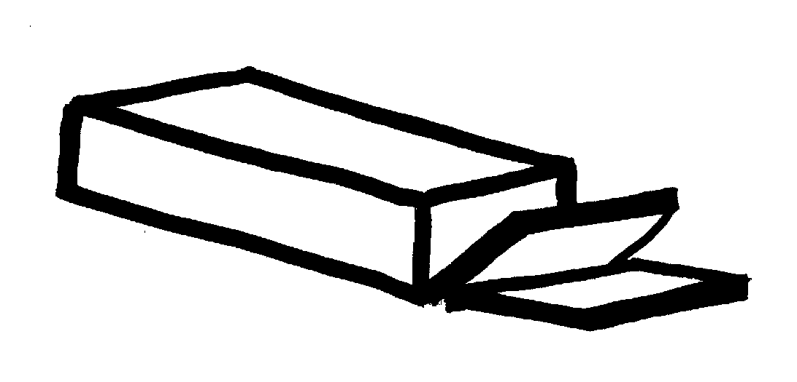

Banana Bread
Biscuits
Bishop's Bread
Blueberry Coffee Cake
Buttermilk Hotcakes
Chippewa Fried Bread
Cornmeal Mush
Crunchy Gradnola
Dutch Babies
Funnel Cakes
Gingerbread Scones
Northern Sweet Cornbread
Pumpkin Nut Bread
Sour-Cream Coffee Cake
Tea Scones
Waffles
Edith Steiner

1/2 cup cornmeal (white or yellow)
2 3/4 cups water, boiling
3/4 teaspoon salt
1 tablespoons sugar (optional)
Sprinkle cornmeal into boiling water, stirring constantly. Add salt. Cook 30 minutes over direct heat, or 1 hour in a double-boiler. Stir frequently, particularly if cooking over direct heat.
Pour hot cooked batter into a greased bread loaf pan. Smooth out surface of mush. Cool until firm. Refrigerate.
Cut cooled mush into slices about ¼” thick. Fry in a skillet or on a grill, turning to brown on both sides. Mom liked to lay the slices on a plate of flour, shake off excess, and then fry to make them crustier. Fry the mush in a little oil and margarine. Good with syrup and fried eggs. Great breakfast on a cold morning.